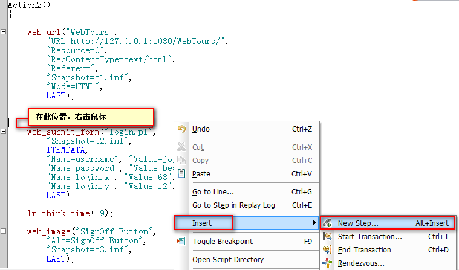

VuGen-检查点
目标
1. 了解什么是检查点
2. 掌握LR中检查点的使用
一、为什么学习检查点？
1.1 需求 1
1. 录制网站登录脚本 http://127.0.0.1:1080/WebTours/
2. 运行脚本是，检查登录用户是否为jojo
登录脚本
Action()
{
web_url("WebTours",
"URL=http://127.0.0.1:1080/WebTours/",
"Resource=0",
"RecContentType=text/html",
"Referer=",
"Snapshot=t1.inf",
"Mode=HTML",
LAST);
lr_think_time(8);
web_submit_form("login.pl",
"Snapshot=t2.inf",
ITEMDATA,
"Name=username", "Value=jojo", ENDITEM,
"Name=password", "Value=bean", ENDITEM,
"Name=login.x", "Value=68", ENDITEM,
"Name=login.y", "Value=12", ENDITEM,
LAST);
lr_think_time(19);
web_image("SignOff Button",
"Alt=SignOff Button",
"Snapshot=t3.inf",
LAST);
return 0;
}
二、检查点
说明：检查点是在回放脚本期间搜索指定的文本或图片，从而验证服务器响应数据的正确性；
提示：
1). LR中的检查点的使用-是调用 web_reg_find()函数
2). 在LR中使用检查点的时候必须开启 Enable Image and text check(启用图片和文本检查)
3). 要使用检查点录制模式必须是HTML-based mode 且为 web_submit_form模式
2.1 函数 web_reg_find()
说明：web_reg_find为LR检查点函数；
参数：
1. Text:要检查的文本内容【必填】
2. Search：搜索响应数据范围- ALL、Body、Header【选填】
3. Fail：失败条件-NotFound/Found 【选填】
4. SaveCount：匹配结果数量且返回到参数中【选填】
注意：
1. 函数包含reg为注册函数，注册函数必须放到依赖执行函数之前(依赖：函数运行后的数据给注册函数使用)
2.2 需求 1 操作分析
1. 使用HTML-based mode 且为 web_submit_form模式录制登录
2. 开启 Enable Image and text check(启用图片和文本检查)
3. 在特定位置插入检查点函数 web_reg_find()
2.3 需求 1 操作实施
1) 使用HTML-based mode 模式
启动：F4或菜单(Vuser)->Run-Time Settings
2) 开启 Enable Image and text check
启动：F4或菜单(Vuser)->Run-Time Settings
3) 插入检查点函数 web_reg_find()
** 插入函数位置 
** 查找函数
** 设置参数
参数：
1. Search for specific Text:搜索特定文本
2. Search in:搜范范围
1). All ：搜索Body+Headers
2). Body：只搜索Body
3). Headers：只搜索Headers
3. Save count:搜索满足条件的数量，并保存在指定的参数名中
4. Fail if:检查失败的条件
1). NotFound 没有找到检查失败 -推荐
2). Found 找到了检查失败
2.4 需求1 代码
Action2()
{
web_url("WebTours",
"URL=http://127.0.0.1:1080/WebTours/",
"Resource=0",
"RecContentType=text/html",
"Referer=",
"Snapshot=t1.inf",
"Mode=HTML",
LAST);
lr_think_time(8);
web_reg_find("Fail=NotFound",
"Search=Headers",
"SaveCount=count",
"Text=jojo",
LAST);
web_submit_form("login.pl",
"Snapshot=t2.inf",
ITEMDATA,
"Name=username", "Value=jojo", ENDITEM,
"Name=password", "Value=bean", ENDITEM,
"Name=login.x", "Value=68", ENDITEM,
"Name=login.y", "Value=12", ENDITEM,
LAST);
lr_think_time(19);
web_image("SignOff Button",
"Alt=SignOff Button",
"Snapshot=t3.inf",
LAST);
return 0;
}
总结
1. web_reg_find函数作用
2. 脚本使用检查点需要注意事项